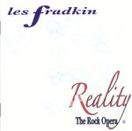

| Artist: | Les Fradkin |
| Title: | Reality - The Rock Opera |
| Label: | (Reality Rock Organization RRO-1001 |
| Length(s): | 70 minutes |
| Year(s) of release: | 2003 |
| Month of review: | [05/2004] |
| 1) | Overture | 4.27 |
| 2) | Reality | 3.02 |
| 3) | Magic Attic | 3.55 |
| 4) | You Can't Change Me | 3.01 |
| 5) | 25 Women, So Little Time | 5.19 |
| 6) | Reality Idol | 2.51 |
| 7) | It's Plastic | 2.13 |
| 8) | Here Today, Gone Tomorrow | 4.52 |
Reality 2
| 9) | Everything Is Wrong | 5.37 |
| 10) | Obsolete | 6.31 |
| 11) | Rehearsals For Retirement | 6.00 |
| 12) | Reality Check | 0.24 |
| 13) | System Crash | 7.13 |
| 14) | The Rebirth Of Hope | 3.04 |
| 15) | Together | 4.09 |
alternate reality
| 16) | Rehearsals For Retirement | 3.55 |
| 17) | Here Today, Gone Tomorrow | 3.00 |